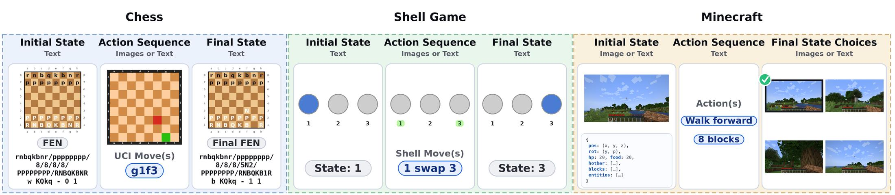
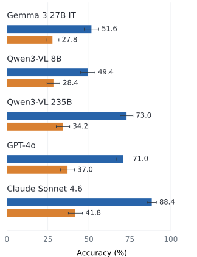
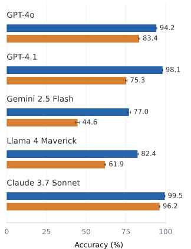
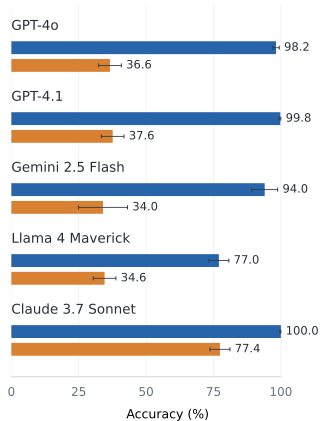

{kind=link}
Minecraft
Predict the next state from an initial state and a text action. Select from four candidates, represented as game-state text or first-person images.
The University of Texas at Austin
ICML 2026
Agents need to understand how actions change the world and track the state of entities over time. Across Minecraft, Chess, and Shell Game, VLMs generally track entity state less accurately from visual inputs than from text. MET-Bench measures this gap using parallel text and image versions of entity-tracking tasks.

Next-state prediction

Board-square accuracy · 10 actions

Final-position accuracy · 10 actions

Selected models with chain-of-thought prompting. Error bars show 95% confidence intervals. Full results →
Predict the next state from an initial state and a text action. Select from four candidates, represented as game-state text or first-person images.
Track a board from its initial FEN through a sequence of moves represented as text or images. Return the final board state as FEN.
Track a ball through a sequence of swaps represented as text or images. Return its final position.
🤗 Raw Minecraft trajectories: 462 trajectories containing 462,235 observations with screenshots, game-state telemetry, and recorded controls and actions.
The evaluation code supports OpenAI-compatible APIs and local Hugging Face models. The default evaluation uses ten-action sequences for Chess and Shell Game and next-state prediction tasks for Minecraft.
@inproceedings{cohen2026metbench,
title={MET-Bench: Multimodal Entity Tracking for Evaluating the Limitations of Vision-Language and Reasoning Models},
author={Cohen, Vanya and Mooney, Raymond},
booktitle={International Conference on Machine Learning},
year={2026},
url={https://arxiv.org/abs/2502.10886}
}